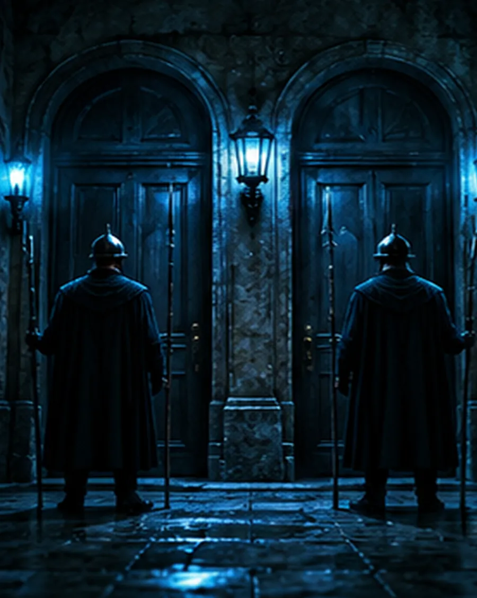

Case of the dayTwo Guards, One Question
Two doors, two guards. One always tells the truth, the other always lies. One question to find the exit.
Open the file
Case of the dayTwo doors, two guards. One always tells the truth, the other always lies. One question to find the exit.
Open the file